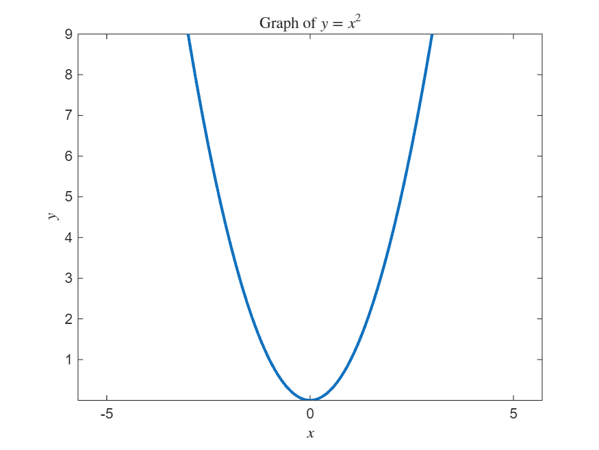
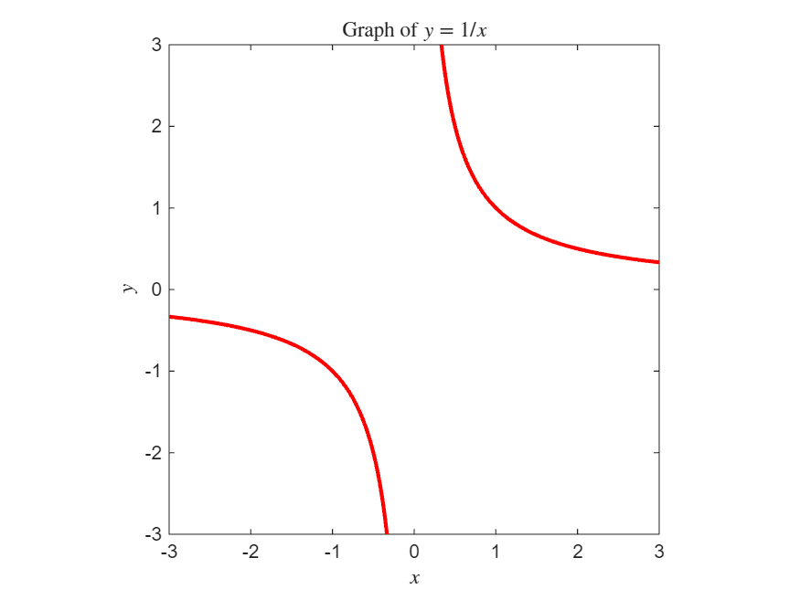
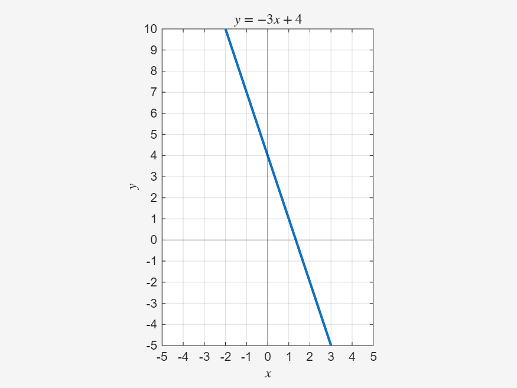
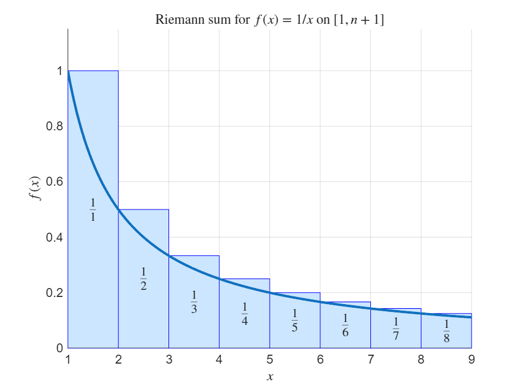
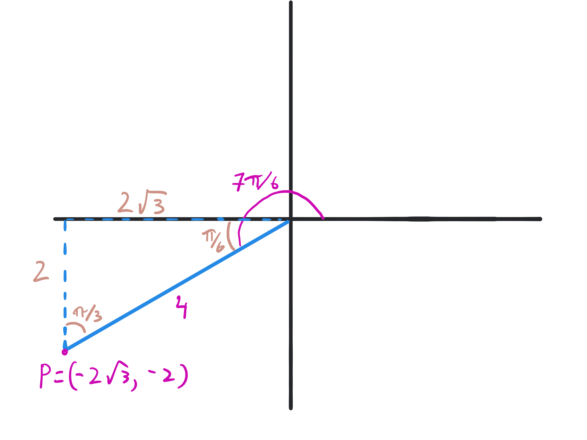

1.2. MAT2VCA Readiness Self-Diagnostic#
This self-diagnostic test is designed to help you identify skills you should improve before beginning MAT2VCA.
Instructions
Do not use a calculator.
Do not use notes or online help.
Write down your answer before checking the answer.
Once you are done, check your answers and review all problems that you had difficulty with (even if you managed to get them correct).
Starting with the first problem you have difficulty with, review the worked solution. If this is enough of a reminder then redo the question without looking at the worked solution and do a few several similar questions to confirm that you can reliably perform the skill. (feeding the question and solution to an AI is a good way to generate similar questions).
If you still have difficulty with a topic, go through the reviews provided in this section (only the integration refresher is written so far).
1.2.1. Part A: Algebra#
1.2.1.1. A.1#
Simplify:
Specify any restrictions on \(x\) or \(y\).
with \(x\neq 0\) and \(y\neq 0\) in the original expression.
Cancel common factors:
The original denominator is \(3xy^2\), so the original expression requires \(x\neq 0\) and \(y\neq 0\).
1.2.1.2. A.2#
Expand and simplify:
Expand each product:
1.2.1.3. A.3#
Factor:
You should be able to immediately factor something when it is one square subtracted from another.
This is a difference of squares:
1.2.1.4. A.4#
Factor:
You should be able to immediately factor a quadratic \(1x^2+bx+c\) when \((b/2)^2=c\). This should be the first factorisation you look for when factoring \(x^2+bx+c\).
Here \(b=-6\), so \(b/2=-3\) and \((-3)^2=9\). Therefore the quadratic is a perfect square:
1.2.1.5. A.5#
Solve for \(x\):
Factor the quadratic:
So
Therefore
1.2.1.6. A.6#
Simplify, and state any restrictions on \(x\):
Factor the numerator:
Cancel the common factor \(x-1\):
The original expression is undefined when \(x-1=0\), so \(x\neq 1\).
1.2.1.7. A.7#
Simplify
Because the numerator is a sum, we can break this up into the sum of two fractions:
Then we can cancel \(x\) in the first term to get
1.2.1.8. A.8#
Find the coefficients \(A\) and \(B\):
Multiply both sides by \(x(x+1)\):
Set \(x=0\):
Set \(x=-1\):
so
Thus
1.2.1.9. A.9#
Expand and simplify:
Use \((a+b)^2=a^2+2ab+b^2\) with \(a=x^2\) and \(b=3\):
1.2.1.10. A.10#
Solve for \(x\):
Start by multiplying both sides by \(x+2\):
Then
So
Therefore \(x=-5\). The original denominator is not zero at \(x=-5\), so this is valid.
1.2.1.11. A.11#
Solve for \(x\):
Subtract \(1\) from both sides:
Multiply by \(x+1\):
Divide by \(2\):
Thus
1.2.1.12. A.12#
Solve for \(x\). Check that all solutions you find satisfy the original equation.
Square both sides:
Expand:
Rearrange:
So the possible solutions are
Check them in the original equation:
so \(x=0\) is rejected.
For \(x=3\):
Therefore the solution is \(x=3\).
1.2.1.13. A.13#
Solve for \(x\):
Exponentiate both sides:
Since \(e^0=1\),
Therefore
1.2.1.14. A.14#
Solve for \(f(x)\):
Subtract \(3\) from both sides:
Divide by \(2\):
1.2.1.15. A.15#
Solve for \(f(x)\):
Multiply both sides by \(2\):
Add \(1\):
1.2.1.16. A.16#
Solve for \(f(x)\):
Exponentiate both sides:
1.2.1.17. A.17#
Solve for \(f(x)\):
Take square roots of both sides:
If \(f\) is required to be a single-valued function, then additional information would be needed to choose either the positive or negative branch.
1.2.1.18. A.18#
Solve for \(x\) in terms of \(y\), meaning find an expression of the form \(x=g(y)\) where the right-hand side has \(y\) in it, but not \(x\):
Multiply by \(x-1\):
Expand:
Collect the terms involving \(x\) on one side:
Factor out \(x\):
Therefore
1.2.1.19. A.19#
Decide whether the following statement is always true. If not, show an example.
The statement is not always true. For example, if \(a=1\) and \(b=1\), then
but
The correct expansion is
So
So for \((a+b)^2\) to equal \(a^2+b^2\), we require \(2ab=0\). So if \(a\) and \(b\) are both nonzero, this then \((a+b)^2 \neq a^2+b^2\). For example, if \(a=1\) and \(b=1\),
while
1.2.1.20. A.20#
Decide whether the following statement is always true. If not, show an example.
The statement is not always true. For example, if \(a=3\) and \(b=4\), then
but
Take \(a=3\) and \(b=4\). Then
But
So the statement is not always true.
1.2.1.21. A.21#
Consider the natural log and square root functions.
(a) Evaluate:
(b) For what values of \(x\) are the functions defined?
(c) For what values of \(x\) are the functions defined?
(d) Solve for \(y\):
(a)
(b) \(\ln(x)\) is defined for \(x>0\); \(\sqrt{x}\) is defined for \(x\geq 0\).
(c) \(\ln(x-3)\) is defined for \(x>3\); \(\sqrt{x-3}\) is defined for \(x\geq 3\).
(d)
and
(a) Since \(e^0=1\),
Also,
(b) The logarithm requires a positive input, so \(\ln(x)\) is defined for \(x>0\). The square root requires a nonnegative input, so \(\sqrt{x}\) is defined for \(x\geq 0\).
(c) For \(\ln(x-3)\), we need
so \(x>3\). For \(\sqrt{x-3}\), we need
so \(x\geq 3\).
(d) For the logarithm equation,
implies
so
For the square-root equation,
The left-hand side is nonnegative, so we require \(x-1\geq 0\), meaning \(x\geq 1\). Squaring gives
Then
Therefore
1.2.2. Part B: Functions and Graphs#
1.2.2.1. B.1#
Sketch the graph of
Label axes and key features.
The graph of
is a parabola opening upwards. Its vertex is at \((0,0)\) and it is symmetric about the \(y\)-axis.
{kind=link}

The function \(y=x^2\) is nonnegative for all \(x\). It has vertex at \((0,0)\) and is symmetric because
Useful points include
1.2.2.2. B.2#
Sketch the graph of
Label asymptotes.
The graph has one branch in quadrant I and one branch in quadrant III. The asymptotes are \(x=0\) and \(y=0\).
{kind=link}

The function is undefined at \(x=0\), giving a vertical asymptote \(x=0\). As \(x\to\pm\infty\), \(1/x\to 0\), giving a horizontal asymptote \(y=0\).
For \(x>0\), \(y>0\), so the graph is in quadrant I. For \(x<0\), \(y<0\), so the graph is in quadrant III.
1.2.2.3. B.3#
Find \(f(2)\) if
Substitute \(x=2\):
1.2.2.4. B.4#
If \(f(3)=5\), what is the corresponding point on the graph of \(f(x)\)?
The statement \(f(3)=5\) means that when the input is \(x=3\), the output is \(y=5\). Therefore the corresponding point is
1.2.2.5. B.5#
Solve:
Taking square roots gives two possibilities:
So
1.2.2.6. B.6#
Sketch the line
Label at least two points.
A line with slope \(2\) and \(y\)-intercept \(-1\). Two points are \((0,-1)\) and \((1,1)\).
The equation is in slope-intercept form:
Here \(m=2\) and \(b=-1\). So the line crosses the \(y\)-axis at \((0,-1)\) and it has slope \(2\).
To find another point, try \(x=1\), then
so another point is \((1,1)\).
1.2.2.7. B.7#
For the line
(a) state the slope,
(b) state the \(y\)-intercept,
(c) sketch the line.
(a) Slope: \(-3\).
(b) \(y\)-intercept: \(4\).
(c) The line passes through \((0,4)\) and decreases with slope \(-3\) as \(x\) increases. For example, another point is \((1,1)\) (many other points are possible).
{kind=link}

The equation is in slope-intercept form:
So the slope is
and the \(y\)-intercept is
Thus the line passes through \((0,4)\). Since the slope is \(-3\), increasing \(x\) by \(1\) decreases \(y\) by \(3\), so another point is \((1,1)\).
1.2.2.8. B.8#
1.2.2.8.1. B.8.a#
{kind=link}
1.2.2.8.2. B.8.b#
Sketch the function
{kind=link}
This is a cosine curve with horizontal compression. It looks like \(\cos(x)\), but with \(x\) replaced by \(2x\). When \(x\) goes from \(0\) to \(\pi\), \(2x\) goes from \(0\) to \(2\pi\). So \(\cos(2x)\) has twice as many cycles in a given interval (equivalently, it has half the period).
Key features:
amplitude \(1\)
period \(\pi\)
midline \(y=0\)
starts at \((0,1)\)
completes two full cycles on \([0,2\pi]\)
1.2.2.8.3. B.8.c#
Sketch the function
{kind=link}
This is a vertically stretched sine curve. It has the same period as \(\sin(x)\), but every value is multiplied by \(3\). Thus its amplitude is increased by a factor of \(3\).
Key features:
amplitude \(3\)
period \(2\pi\)
midline \(y=0\)
passes through \((0,0)\)
maximum value \(3\)
minimum value \(-3\)
1.2.2.8.4. B.8.d#
Sketch the function
{kind=link}
Start with \(y=\cos(x)\), reflect it vertically across the \(x\)-axis to get \(y=-\cos(x)\), then shift it up by \(1\).
Key features:
amplitude \(1\)
period \(2\pi\)
midline \(y=1\)
minimum value \(0\)
maximum value \(2\)
passes through \((0,0)\)
1.2.2.8.5. B.8.e#
Sketch the function
{kind=link}
This is the basic sine curve shifted left by \(\pi/4\). To understand the shift: if we introduce a new variable \(\hat{x} = x + \pi/4\), then this is simply \(\sin(\hat{x})\). The only difference is that the value of \(\hat{x}\) is shifted compared to \(x\). For example, when \(\hat{x}=0\), then \(x = -\pi/4\). More broadly, \(x\) is always \(\pi/4\) less than \(\hat{x}\). It may help to look at the plot and relabel the \(x\) axis with the corrsponding value of \(x+\pi/4\).
Key features:
amplitude \(1\)
period \(2\pi\)
midline \(y=0\)
phase shift left by \(\pi/4\)
1.2.2.8.6. B.8.f#
Sketch the function
{kind=link}
Start with \(y=\sin(x)\).
The factor \(2\) gives amplitude \(2\).
The factor \(3\) inside the sine gives period
The term \((x-\pi/2)\) shifts the graph right by \(\pi/2\).
The outside \(+1\) shifts the graph up by \(1\).
So the key features are:
amplitude \(2\)
period \(2\pi/3\)
midline \(y=1\)
phase shift right by \(\pi/2\)
maximum value \(3\)
minimum value \(-1\)
1.2.3. Part C: Calculus#
1.2.3.1. C.1#
Differentiate:
Use the power rule term by term:
and
Therefore
1.2.3.2. C.2#
Differentiate:
Use the chain rule. If
then the power rule gives \(3(2x+1)^2\) and the chain rule multiplies this by the derivative of the inside function \(2x+1\) is \(2\). Thus
1.2.3.3. C.3#
Differentiate:
Use the chain rule. The \(x\) derivative of \(\ln(u)\) is \(u'/u\). Here
so
Therefore
1.2.3.4. C.4#
Find the indefinite integral:
Use the power rule for integration:
for \(n\neq -1\). With \(n=2\),
1.2.3.5. C.5#
Differentiate:
First simplify:
Then differentiate:
Alternately, use the power rule and chain rule:
1.2.3.6. C.6#
Differentiate:
Rewrite the square root as a power:
Then use the power rule:
1.2.3.7. C.7#
Differentiate:
Rewrite \(1/x\) as \(x^{-1}\):
Differentiate term by term using the power rule:
So
1.2.3.8. C.8#
Find the indefinite integral:
Integrate term by term:
Now
and
Therefore
1.2.3.9. C.9#
Evaluate the integral using substitution:
Let
Then
so
Therefore
Substitute into the integral:
Substitute back \(u = 1+x^2\):
1.2.3.10. C.10#
Evaluate the integral using integration by parts:
In integration by parts,
We want to evaluate
Using
choose
Then
Therefore
So
Since
we get
Thus
We want to evaluate
Use the tabular method. Differentiate \(x\) until it becomes \(0\), and repeatedly integrate \(e^{-2x}\).
Now multiply diagonally, alternating signs starting with \(+\):
Therefore
Thus
1.2.3.11. C.11#
Evaluate the integral using partial fractions:
We want to evaluate
First use partial fractions:
Multiplying both sides by \((x-1)(x+2)\) gives
Set \(x=1\):
so
and therefore
Set \(x=-2\):
so
and therefore
Thus
Therefore
So
1.2.3.12. C.12#
Use a (left-hand) Riemann sum with \(4\) equal subintervals to approximate
Show the value of \(\Delta x\), the left-hand sample points, and the resulting approximation.
The Riemann sum is
We divide the interval \([0,2]\) into \(4\) equal subintervals.
{kind=link}
The width of each subinterval is
The sample points are
The Riemann sum is
So the Riemann sum approximation is
1.2.3.13. C.13#
Use a (left-hand) Riemann sum with \(n\) equal subintervals to approximate
Write the result as a summation.
Then compare the Riemann sum to the exact value of the integral (is it always smaller? larger? variable?).
What conclusion can you make about the harmonic series
as \(n \to \infty\)?
The Riemann sum is
The exact value of the integral is
Since \(\frac{1}{x}\) is decreasing, the Riemann sum is larger than the integral, so
Since \(\ln(n+1)\to \infty\) as \(n\to\infty\), the harmonic series diverges.
We divide the interval \([1,n+1]\) into \(n\) equal subintervals.
{kind=link}

The width of each subinterval is
The sample points are
Since
the Riemann sum is
So the Riemann sum is
The exact value of the integral is
Because \(f(x)=1/x\) is decreasing on \([1,n+1]\), the Riemann sum overestimates the integral. Therefore
Thus
As \(n\to\infty\),
Therefore the partial sums
also become arbitrarily large.
So the harmonic series
diverges.
1.2.4. Part D: Vectors and Geometry#
1.2.4.1. D.1#
Given the vector \(\vec v=(1,2,2)\), find the unit vector \(\vec u\) pointing in the same direction.
The unit vector is
First compute the length:
Therefore
1.2.4.2. D.2#
Compute the dot product:
Multiply corresponding components and add:
1.2.4.3. D.3#
Use the dot product to find \(\cos(\theta)\), where \(\theta\) is the angle between
Let
The dot product is
The lengths are
Since
we get
Therefore
1.2.4.4. D.4#
Are these vectors perpendicular? Justify.
Yes. Their dot product is \(0\).
Compute the dot product:
Since the dot product is zero, the vectors are perpendicular.
1.2.4.5. D.5#
Compute the cross product:
We want to compute
Use the determinant formula for the cross product:
Expanding along the first row (using the last column would be better) gives
Now evaluate each \(2\times 2\) determinant:
and
Therefore
So
As a self-check, try expanding this using the last column.
1.2.4.6. D.6#
Use the cross product to find the area of a parallelogram whose edges are the vectors
We want to find the area of the parallelogram whose edges are
The area is
First compute the cross product using the determinant formula:
Expanding along the first row gives
Now evaluate each \(2\times 2\) determinant:
and
Therefore
The area of the parallelogram is the length of this vector:
So the area of the parallelogram is
For an extension: Can you see a better way to deal with this determinant than expanding along the top row?
1.2.4.7. D.7#
In one sentence: in what direction does \(\vec a\times\vec b\) point?
It points perpendicular to both \(\vec a\) and \(\vec b\), with direction given by the right-hand rule.
The cross product \(\vec a\times\vec b\) is perpendicular to the plane containing \(\vec a\) and \(\vec b\). Its orientation is determined by the right-hand rule: curl your fingers from \(\vec a\) toward \(\vec b\), and your thumb points in the direction of \(\vec a\times\vec b\).
1.2.4.8. D.8#
Find a vector parallel to the line
One possible answer is
More generally, \(c(1,3)\) is a solution for any scalar \(c\).
The slope is \(3\), which means that when \(x\) increases by \(1\), \(y\) increases by \(3\). Therefore a direction vector parallel to the line is
1.2.4.9. D.9#
Parametrise the line through the point \((1,2,3)\) in the direction of the vector
Equivalently,
A line through point \(\vec p\) with direction vector \(\vec v\) can be written as
Here
So
Equivalently,
1.2.4.10. D.10#
Parametrise the line through the two points
One parametrisation is
A direction vector is found by subtracting the points:
Using \((1,1,0)\) as the point on the line, a parametrisation is
1.2.4.11. D.11#
A line is given by
(a) Find two points on the line using \(t=0\) and \(t=1\).
(b) Sketch the line.
(a) The two points are
(b) The line is the straight line through these two points.
For \(t=0\),
For \(t=1\),
So two points are \((1,1)\) and \((3,2)\). Sketch the straight line through these two points.
1.2.4.12. D.12#
A line is given by
(a) Give a point on the line.
(b) Give a direction vector.
(c) Is \(x\) increasing or decreasing as \(t\) increases?
(a) A point is \((3,-1)\).
(b) A direction vector is \((-1,2)\).
(c) \(x\) is decreasing as \(t\) increases.
The parametrisation is written as
So a point on the line is
and the direction vector is
The \(x\)-component of the direction vector is \(-1\), so \(x\) decreases as \(t\) increases.
1.2.4.13. D.13#
Let
(a) Compute \(\vec a\times\vec b\).
(b) Use \(\vec{a} \times \vec{b}\) to find the area of a parallelogram if these vectors correspond to two of the sides.
(c) What does the area of the parallelogram tell you about the vectors?
(a)
(b) The area is \(0\).
(c) The vectors are parallel.
Let
We want to compute
Use the determinant formula:
Expanding along the first row gives
Now evaluate each \(2\times 2\) determinant:
and
Therefore
So
The area of the parallelogram is
This tells us that the vectors are parallel. In fact,
So the parallelogram has zero area because the two edge vectors point in the same direction.
1.2.4.14. D.14#
Given a parallelogram whose vertices are
(a) Using the cross product, find a vector \(\vec{v}\) that is perpendicular to the parallelogram and whose length equals the area of the parallelogram.
(b) Find a unit vector \(\vec{u}\) that is perpendicular to the parallelogram.
One possible answer is
The opposite vector,
is also correct.
A corresponding unit vector is
The opposite unit vector is also correct.
The vectors giving two adjacent sides of the parallelogram are
Their cross product is perpendicular to the parallelogram and has length equal to the area of the parallelogram.
Thus for part (a), one possible answer is
The vector \(\vec{b}\times\vec{a}\) would also work, giving
For part (b), we divide by the length of \(\vec{v}\).
Therefore
The opposite unit vector is also correct.
1.2.4.15. D.15#
The point \(P\) is a distance \(4\) from the origin in the 2D plane. The ray from the origin to \(P\) has an angle of \(7\pi/6\) with the positive \(x\)-axis.
Find the \(x\) and \(y\) coordinates of \(P\) without using any trigonometric functions. [hint: think about 45-45-90 and 30-60-90 special triangles]
\(P=(-2\sqrt{3},-2)\)
First draw the ray from the origin to \(P\). The angle between this ray and the negative \(x\) axis is \(\pi/6\) (that is, \(30^\circ\)). If we draw the line from \(P\) to the (negative) \(x\) axis, we form a 30-60-90 triangle whose hypotenuse is \(4\). The segment from \(P\) to the (negative) \(x\)-axis has length half of the hypotenuse (because this is a 30-60-90 triangle). Then using the Pythagorean theorem (or using memorized properties of a 30-60-90 triangle), the other side of the right triangle has length \(\sqrt{4^2-2^2}= \sqrt{12} = 2\sqrt{3}\).
{kind=link}

By observing where this triangle sits in the \(xy\) plane, it is clear that both \(x\) and \(y\) are negative. So the position is \(P = (-2\sqrt{3}, -2)\).
Note: to help see why the vertical side has length \(2\), consider a reflection of the triangle across the negative \(x\)-axis. The combined pair of triangles will be an equilateral triangle (because all angles are \(60^\circ\)) and so the sides of the equilateral triangle are all \(4\). Thus this side is half of \(4\).